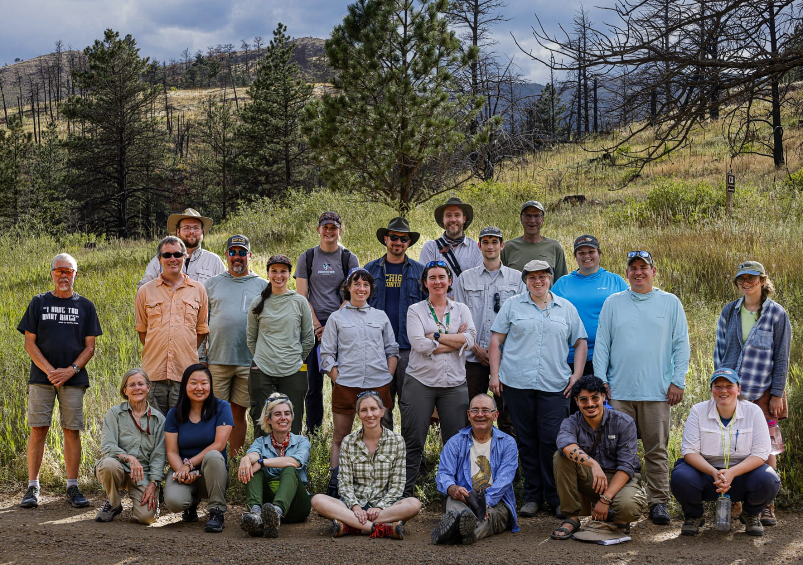

-
Aug. 2026
American Geophysical Union (AGU) Geosciences Congressional Visits Day (GEOCVD), Paleontological Society Representative, Washington, DC
-
Aug. 2024
North American Rodents: Landscapes, Ecology, and Evolution (NARLEE) Field Trip; Rocky Mountain National Park, CO

-
Jul. 2024
Paleobiology Database Summer Workshop, George Mason University, Fairfax, VA
-
Jun. 2024
North American Rodents: Landscapes, Ecology, and Evolution (NARLEE) Workshop, Mammalian diversification and distribution dynamics on evolving landscapes; Ann Arbor, MI